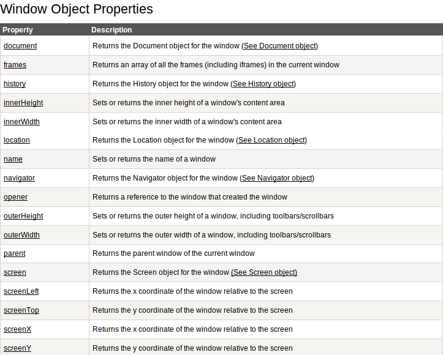
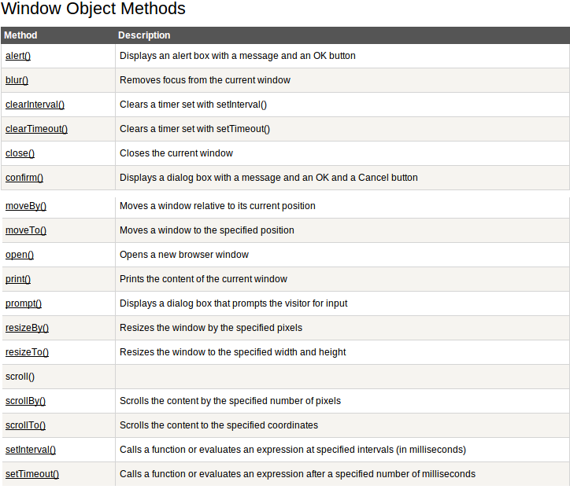
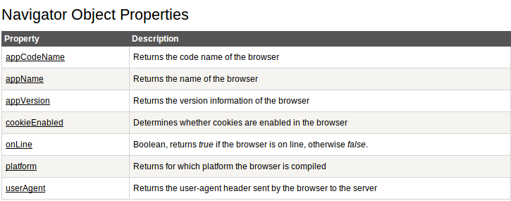
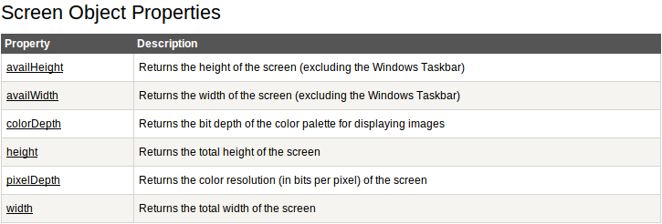

Loading scripts
Lazy loading
RequireJS - is a JavaScript file and module loader.
function require(file, callback) {
var script = document.getElementsByTagName('script')[0],
sr = document.createElement('script'),
callback = callback || function(){};
// IE
sr.onreadystatechange = function () {
if (sr.readyState === 'loaded' || sr.readyState === 'complete') {
sr.onreadystatechange = null;
callback();
}
};
// others
sr.onload = function () {
callback();
};
sr.src = file;
script.parentNode.insertBefore(sr, script);
}Browser's environment

Browser Object Model
Window
 Navigator
Screen
Browser detection
Code of jQuery.browser, which is now moved to jquery-migrate plugin.
jQuery.uaMatch = function( ua ) {
ua = ua.toLowerCase();
var match = /(chrome)[ \/]([\w.]+)/.exec( ua ) ||
/(webkit)[ \/]([\w.]+)/.exec( ua ) ||
/(opera)(?:.*version|)[ \/]([\w.]+)/.exec( ua ) ||
/(msie) ([\w.]+)/.exec( ua ) ||
ua.indexOf("compatible") < 0 &&
/(mozilla)(?:.*? rv:([\w.]+)|)/.exec( ua ) || [];
return {
browser: match[ 1 ] || "",
version: match[ 2 ] || "0"
};
};Modernizr is a JavaScript library that detects HTML5 and CSS3 features in the user’s browser.